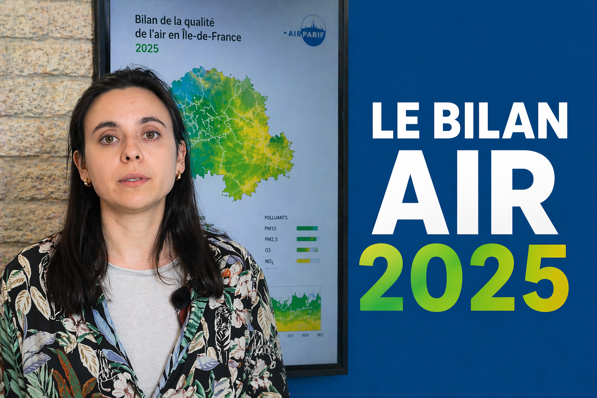

Miniature à venir
Airparif / Actualité / Format horizontal
Miniature Airparif – Bilan de la qualité de l’air 2025
ActualitéFormat horizontal
Miniature réalisée pour accompagner le format d’actualité consacré au bilan de la qualité de l’air 2025.
- Objectif
- Créer un visuel clair, institutionnel et identifiable afin de mettre rapidement en avant le sujet principal de la vidéo.
- Format
- Horizontal
- Outils
- Photoshop, hiérarchie visuelle, direction artistique